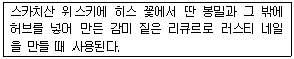
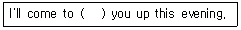
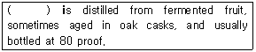
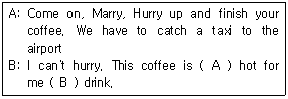
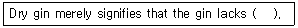

조주기능사 (2011-07-31 기출문제)
1과목: 주류학개론
1. Mixing Glass를 사용하여 Stir 기법으로 만드는 것은?
- Stirrup cup
- Gin fizz
- Martini
- Singapore sling
(정답률: 67%)

2. 와인의 블랜딩은 언제 하게 되나?
- 마시기 전에 소믈리에가 한다.
- 양조 과정 중 다른 포도 품종을 섞는다.
- 젖산 발효를 갖기에 앞서 한다.
- 오크통 숙성을 마친 후 한다.
(정답률: 46%)
3. 포도주의 저장온도로 틀린 것은?
- 5℃
- 15℃
- 18℃
- 20℃
(정답률: 45%)
4. 샴페인에 관한 설명 중 틀린 것은?
- 샴페인은 포말성(Sparkling)와인의 일종이다.
- 샴페인 원료는 피노누아, 피노뫼니에, 샤르도네이다.
- 돔 페리뇽(Dom perignon)에 의해 만들어 졌다.
- 샴페인 산지인 샹파뉴 지방은 이탈리아 북부에 위치하고 있다.
(정답률: 58%)
5. 소주의 원료로 틀린 것은?
- 쌀
- 보리
- 밀
- 맥아
(정답률: 58%)
6. 맨하탄(Manhattan) 칵테일의 기주(Based Liquer)는?
- 버번위스키
- 스위트 버머스
- 앙고스트라 비트
- 스터프드 올리브
(정답률: 81%)
7. 글라스 가장자리를 소금으로 프로스팅(Frosting) 하는 기법의 칵테일은?
- 마가리타(Magarita)
- 키스오브 파이어(Kiss of fire)
- 아이리쉬 커피(Irish coffee)
- 다이커리(Daiquiri)
(정답률: 73%)
8. 다음은 어떤 리큐르에 대한 설명인가?

- Cointreau
- Galliano
- Chartreuse
- Drambuie
(정답률: 60%)
9. 다음 중「Aperitif wine」은 어느 것인가?
- Sparkling wine
- Dry sherry wine
- Still wine
- Yellow wine
(정답률: 90%)
10. 맥아(Malt)를 주원료로 건조시 이탄(Peat)을 사용하여 만드는 Whisky는?
- Scotch whisky
- Canadian whisky
- Bourbon whisky
- Irish whisky
(정답률: 70%)
11. 다음 술 종류 중 코디얼(Cordial)에 해당하는 것은?
- 베네딕틴(Benedictine)
- 골든스 론돈 드라이진(Gordon's London Dry Gin)
- 커티 샥(Cutty Sark)
- 올드 그랜드 대드(Old Grand Dad)
(정답률: 70%)
12. 스크류 드라이버(Screw Driver) 칵테일의 조주 시 보드카에 혼합해야 하는 것은?
- 토마토 주스
- 오렌지 주스
- 콜라
- 토닉수
(정답률: 68%)
13. 언어별 와인 철자가 틀린 것은?
- 영어 - Wine
- 포르투갈어 - Vinho
- 불어 - Vin
- 이태리어 - Wein
(정답률: 64%)
14. 위스키 750㎖ 한 병은 몇 Ounce인가?
- 25oz
- 27oz
- 30oz
- 37oz
(정답률: 73%)
15. 다음 중에서 Scotch Whisky는 어느 것인가?
- John jameson
- Wild turkey
- J&B
- Canadian club
(정답률: 52%)
16. 이탈리아 I.G.T 등급은 프랑스의 어느 등급에 해당되는가?
- V.D.Q.S
- Vin de Pays
- Vin de Table
- A.O.C
(정답률: 39%)
17. 로제와인(Rose Wine)에 대한 설명으로 틀린 것은?
- 대체로 붉은 포도로 만든다.
- 제조시 포도껍질을 같이 넣고 발효시킨다.
- 오래 숙성시키지 않고 마시는 것이 좋다.
- 일반적으로 상온(17~18℃)정도로 해서 마신다.
(정답률: 56%)
18. 용어의 설명이 틀린 것은?
- Clos : 최상급의 원산지 관리 증명 와인
- Vintage : 포도의 수확 년도
- Fortified wine : 브랜드를 첨가하여 알코올 농도를 강화한 와인
- Riserva : 최저 숙성기간을 초과한 이태리 와인
(정답률: 55%)
19. 칵테일에 쓰이는 가니쉬(Garnish)로 사용하기에 적합한 재료는?
- 꽃이 화려하고 향기가 많이 나야 한다.
- 꽃가루가 많은 꽃은 더욱 운치가 있어서 잘 어울린다.
- 잎이나 과일에 농약 향이 강한 것이어야 한다.
- 과일이나 허브향이 나는 잎이나 줄기여야 한다.
(정답률: 79%)
20. 다음 중 글라스(Glass) 가장자리의 스노우 스타일 (Snow Style) 장식 칵테일로 어울리지 않는 것은?
- Kiss of Fire
- Magarita
- Chicago
- Grasshopper
(정답률: 50%)
21. 다음 중 주류의 용량이 잘못 표시된 것은?
- Whisky 1 Quart = 32 Ounce(1ℓ)
- Whisky 1 Pint = 16 Ounce(500㎖)
- Whisky 1Miniature = 8 Ounce(200㎖)
- Whisky 1 Magnum = 2 Bottle(1.5ℓ)
(정답률: 49%)
22. Matini의 글라스로 적합한 것은?
- 하이볼 글라스
- 위스키 샤워 글라스
- 칵테일 글라스
- 올드패션 글라스
(정답률: 76%)
23. 다음 조주기법 중「Float」기법이란?
- 재료의 비중을 이용하여 섞이지 않도록 띄우는 방법
- 재료를 믹서기로 갈아서 만드는 방법
- 글라스에 직접 재료를 넣어서 조주
- 혼합하기 쉬운 술끼리 휘저어서 조주
(정답률: 93%)
24. 부드러우며 뒤끝이 깨끗한 약주로서 쌀로 빚으며 소주에 배, 생강, 울금 등 한약재를 넣어 숙성시민 전북 전주의 전통주는?
- 두견주
- 국화주
- 이강주
- 춘향주
(정답률: 72%)
25. 효모의 생육조건이 아닌 것은?
- 적정 영양소
- 적정 온도
- 적정 pH
- 적정 알코올
(정답률: 80%)
26. 후식용 포도주로 유명한 포르투갈산 적포도주는?
- Sherry wine
- Port wine
- Sweet vermouth
- Dry vermouth
(정답률: 54%)
27. 혼성주(Compounded Liqueur)를 나타내는 것은?
- 과일 중에 함유된 과당의 효모를 작용시켜서 발효하여 만든 술
- 곡류 중에 함유된 전분을 전분당화효소로 당질화 시킨 후 효모를 작용시켜 발효하여 만든 술
- 각기 다른 물질의 다른 기화점을 이용하여 양조주를 가열하여 얻어낸 농도 짙은 술
- 증류주 혹은 양조주에 초근목피, 향료, 과즙, 당분을 첨가하여 만든 술
(정답률: 77%)
28. 제스터(Zester)에 대한 설명으로 옳은 것은?
- 향미를 돋보이게 하는 용기
- 레몬이나 오렌지를 조각내는 집기
- 얼음을 넣어두는 용기
- 향미를 보호하기 위한 밀폐되는 용기
(정답률: 58%)
29. 다음 중 홍차가 아닌 것은?
- 잉글리쉬 블랙퍼스트(English breakfast)
- 로브스타(Robusta)
- 다즐링(Dazeeling)
- 우바(Uva)
(정답률: 80%)
30. 탄산음료 중 뒷맛이 쌉쌀한 맛이 나는 음료는?
- 칼린스 믹서
- 토닉워터
- 진저엘
- 콜라
(정답률: 55%)
2과목: 주장관리개론
31. 「Jigger」는 어디에 사용하는 기구인가?
- 주스(Juice)를 따를 때 사용한다.
- 주류의 분량을 측정하기 위하여 사용한다.
- 와인(Wine)을 시음할 때 사용한다.
- 과일을 깎을 때 사용하는 칼이다.
(정답률: 91%)
32. 식음료 서비스의 특성이 아닌 것은?
- 제공과 사용의 분리성
- 형체의 무형성
- 품질의 다양성
- 상품의 소멸성
(정답률: 44%)
33. 바(Bar) 디자인의 중요 점검사항에 포함되지 않는 것은?
- 주류가격, 병의 크기
- 시간의 영업량, 컨셉의 크기
- 음료종류, 주장의 형태와 크기
- 서비스 형태, 목표고객
(정답률: 58%)
34. 샴페인의 서비스에 관련된 설명 중 틀린 것은?
- 얼음을 채운 바스킷에 칠링(Chilling)한다.
- 호스트(Host)에게 상표를 확인시킨다.
- “펑”소리를 크게 하며 거품을 최대한 많이 내야 한다.
- 서브는 여자 손님부터 시계방향으로 한다.
(정답률: 90%)
35. 원가의 종류인 고정비와 관련 없는 것은?
- 임대료
- 광열비
- 인건비
- 감가상각비
(정답률: 24%)
36. 파 스탁(Par stock)이란 무엇인가?
- 재고정리
- 적정매출
- 적정단가
- 적정재고
(정답률: 64%)
37. 바(Bar) 업무능률 향상을 위한 시설물 설치 방법 중 옳지 않은 것은?
- 칵테일 얼음을 바(Bar) 작업대 옆에 보관한다.
- 바(Bar)의 수도시설은 믹싱 스테이션(Mixing station) 바로 후면에 설치한다.
- 냉각기(Cooling Cabinet)는 주방에 설치한다.
- 얼음제빙기는 가능한 바(Bar) 내에 설치한다.
(정답률: 50%)
38. 다음 중 조주사의 규칙사항이 아닌 것은?
- 항상 고객을 응대할 준비를 갖추고 대기한다.
- 고객이 주문한 주문내용을 재확인하고 주문서에 기재한다.
- 조주시에는 사용재료의 상표가 조주원을 향하도록 한다.
- 고객과의 대화에 있어서 정치성을 띈 언급이나 특정인에 대한 가십은 삼간다.
(정답률: 84%)
39. 주장(Bar)에서 사용하는 기물이 아닌 것은?
- Champagne Cooler
- Soup Spoon
- Lemon squeezer
- Decanter
(정답률: 74%)
40. 올드 패션(Old Fashioned)이나 온 더 락(On the Rocks)을 마실 때 사용되는 글라스(Glass)의 용량은?
- 1~2온스
- 3~4온스
- 4~6온스
- 6~8온스
(정답률: 42%)
41. 주장 서비스의 기본 주의사항이 아닌 것은?
- 글라스에 묻은 립스틱을 제거한다.
- 글라스에 얼음을 넣을 때 아이스 텅(Ice Tong)을 사용한다.
- 각각의 음료에 맞는 글라스를 사용한다.
- 표준 레시피 사용은 중요하지 않다.
(정답률: 92%)
42. 바 웨이트리스(Waitress)의 업무와 관계가 먼 것은?
- 항상 테이블의 정돈, 청결을 유지한다.
- 고객 주문전표를 조주원에게 전달한다.
- 고객의 주문을 받는다.
- 칵테일을 조주한다.
(정답률: 87%)
43. 다음 중 주류에 해당되지 않는 것은?
- 2~3도의 알코올이 함유된 주스
- 위스키가 함유된 초콜릿
- 알코올이 6도 이상 함유되고 직접 또는 희석하여 마실 수 있는 의약품
- 조미식품인 간장에 알코올이 1도 이상 함유된 경우
(정답률: 63%)
44. 일반적으로 남은 재료의 파악으로써 구매수준에 영향을 미치는 것을 무엇이라 하는가?
- Inventory
- FIFO
- Issuing
- Order
(정답률: 78%)
45. Straight Bourbon Whiskey의 기준으로 틀린 것은?
- Produced in the USA.
- Distilled at less than 160 proof(80% ABV).
- No additives allowed(except water to reduce proof where necessary.
- Made of grain mix of at maximum 51%.
(정답률: 31%)
46. 재고가 과도한 경우의 단점이 아닌 것은?
- 판매기회가 상실된다.
- 식재료의 손실을 초래한다.
- 필요 이상의 유지 관리비가 요구된다.
- 기회 이익이 상실된다.
(정답률: 61%)
47. 마신 알코올 량(㎖)을 나타내는 공식은?
- 알코올 량(㎖) × 0.8
- 술의 농도(%) × 마시는 양(㎖) ÷ 100
- 술의 농도(%) - 마시는 양(㎖)
- 술의 농도(%) ÷ 마시는 양(㎖)
(정답률: 81%)
48. 영업 중에 항상 물에 담겨져 있어야 하는 기물이 바르게 짝지어진 것은?
- Bar Spoon - Jigger
- Bar Spoon - Shaker
- Jigger - Shaker
- Bar Spoon - Opener
(정답률: 72%)
49. 보드카(Vodka), 럼(Rum)과 같이 일정하게 정해진 글라스가 없는 술을 스트레이트(Straight)로 마실 때 사용하는 글라스는?
- Shot Glass
- Cocktail Glass
- Sour Glass
- Brandy Glass
(정답률: 75%)
50. 샹빠뉴 지방의 당분함량 표기에서「Very Dry」한 표기로 알맞은 것은?
- Brut
- Sec
- Doux
- Demi Sec
(정답률: 44%)
3과목: 고객서비스영어
51. As a rule, the Sweet Wine is served ( ).
- before dinner
- after dinner
- in the meat course
- in the fish course
(정답률: 68%)
52. Which of the following doesn't belong to the regions of French where wine is produced?
- Bordeaux
- Burgundy
- Champagne
- Rheingau
(정답률: 37%)
53. 다음 ( ) 안에 들어갈 말은?

- pick
- have
- keep
- take
(정답률: 54%)
54. Dry Gin, Egg White and Grenadine are the main ingredients of ( ).
- Bloody Marry
- Eggnog
- Tom and Jerry
- Pink Lady
(정답률: 49%)
55. 다음 ( ) 안에 알맞은 것은?

- Vodka
- Brandy
- Whisky
- Dry Gin
(정답률: 47%)
56. 「Which do you like better, tea or coffee?」의 대답으로 나올 수 있는 문장은?
- Tea
- Tea and Coffee
- Yes, tea
- Yes, coffee
(정답률: 77%)
57. 아래의 대화에서 ( )에 가장 알맞은 것은?

- A : so, B : that
- A : too, B : to
- A : due, B : to
- A : would, B : on
(정답률: 68%)
58. A : What would you like for dessert, sir? B : No, thank you. I don't need any.
- Coffee would be fine.
- That's a good idea.
- I'm on a diet.
- Cash or charge?
(정답률: 46%)
59. 호텔에서 Check-in 또는 Check-out시 Customer가 할 수 있는 말로 적합하지 않은 것은?
- Would you fill out this registration form?
- I have a reservation for tonight.
- I'd like to check out today.
- Can you hold my luggage until 4 pm?
(정답률: 56%)
60. 다음 괄호에 알맞은 단어는?

- Sweetness
- Sourness
- Bitterness
- Hotness
(정답률: 45%)